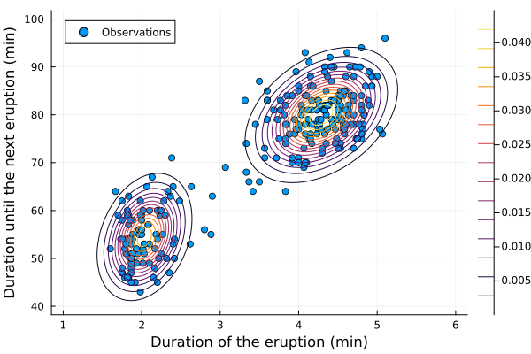
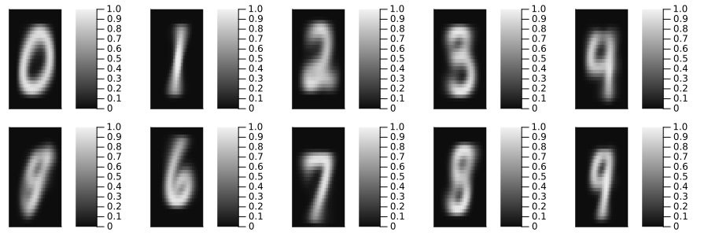

using Distributions
using ExpectationMaximization
using StatsPlots
using Random
Random.seed!(1234)Random.TaskLocalRNG()Multivariate Examples
Old Faithful Geyser Data (Multivariate Normal)
This seems like a canonical example for Gaussian mixtures, so let's do it.
Using Clustering.jl package, one could easily initialize the mix_guess using K-means algorithms (and others).
I like using ClipData.jl to quickly copy-paste data from the web (or any table in a spreadsheet like Excel) into Julia.
data = cliptable() |> DataFrameFor continuous integration of this example I just download the data.
using DataFrames, CSV
data = CSV.read(download("https://gist.githubusercontent.com/curran/4b59d1046d9e66f2787780ad51a1cd87/raw/9ec906b78a98cf300947a37b56cfe70d01183200/data.tsv"), DataFrame)
first(data, 10)| Row | eruptions | waiting |
|---|---|---|
| Float64 | Int64 | |
| 1 | 3.6 | 79 |
| 2 | 1.8 | 54 |
| 3 | 3.333 | 74 |
| 4 | 2.283 | 62 |
| 5 | 4.533 | 85 |
| 6 | 2.883 | 55 |
| 7 | 4.7 | 88 |
| 8 | 3.6 | 85 |
| 9 | 1.95 | 51 |
| 10 | 4.35 | 85 |
The data is now converted into a matrix y of size 2 x N (N is the number of observations) to be fitted with a Gaussian mixture model.
y = permutedims(Matrix(data))2×272 Matrix{Float64}:
3.6 1.8 3.333 2.283 4.533 2.883 … 2.15 4.417 1.817 4.467
79.0 54.0 74.0 62.0 85.0 55.0 46.0 90.0 46.0 74.0We choose an initial guess for the parameters of the Gaussian mixture model.
D₁guess = MvNormal([22, 55], [1 0.6; 0.6 1])
D₂guess = MvNormal([4, 80], [1 0.2; 0.2 1])
mix_guess = MixtureModel([D₁guess, D₂guess], [1 / 2, 1 / 2])
mix_mle, info = fit_mle(mix_guess, y, infos=true)(MixtureModel{FullNormal}(K = 2)
components[1] (prior = 0.3559): FullNormal(
dim: 2
μ: [2.0363617974069257, 54.478248452738335]
Σ: [0.06914651495294691 0.43494704356391295; 0.43494704356391295 33.69578126245218]
)
components[2] (prior = 0.6441): FullNormal(
dim: 2
μ: [4.289638375689765, 79.9678296553512]
Σ: [0.16999839634224814 0.9409905378321761; 0.9409905378321761 36.05050521850431]
)
, Dict{String, Any}("iterations" => 12, "converged" => true, "logtots" => [-1219.4893921770865, -1198.205901189408, -1175.6921290519954, -1155.3245254047104, -1141.6018598352712, -1135.00601807866, -1131.6606587095696, -1130.4679577652478, -1130.2821809918898, -1130.265165380694, -1130.2640324413003, -1130.2639644079375]))We can now plot the fitted model.
begin
@df data scatter(:eruptions, :waiting, label="Observations",
xlabel="Duration of the eruption (min)",
ylabel="Duration until the next eruption (min)")
xrange = 1:0.05:6
yrange = 40:0.1:100
zlevel = [pdf(mix_mle, [x, y]) for y in yrange, x in xrange]
contour!(xrange, yrange, zlevel)
end
MNIST Dataset: Bernoulli Mixture
A classical example in clustering (pattern recognition) is the MNIST handwritten digits' data sets. One of the simplest[1] ways to address the problem is to fit a Bernoulli mixture with 10 components for the ten digits 0, 1, 2, ..., 9 (see Pattern Recognition and Machine Learning by C. Bishop, Section 9.3.3. for more context). Each of the components is a product distribution of $28\times 28$ independent Bernoulli. This simple (but rather big) model can be fitted via the EM algorithm.
Having a product distribution of Bernoulli means that the model assumes that each pixel is independent of the others given the component (digit) of the mixture. This is of course a very strong assumption and other models with more complex dependencies between pixels could be used for example see SpatialBernoulli.jl.
using MLDatasets: MNIST
binarify(x) = x != 0 ? true : false
dataset = MNIST(:train)dataset MNIST:
metadata => Dict{String, Any} with 3 entries
split => :train
features => 28×28×60000 Array{Float32, 3}
targets => 60000-element Vector{Int64}X, y = dataset[:]
Xb = binarify.(reshape(X, (28^2, size(X, 3))))
id = [findall(y .∈ i) for i in 0:9];As initial guess, we can use the mean of each class as the parameter of the Bernoulli distribution for each component of the mixture. This is of course a very informed guess to help the EM algorithm to converge toward a good solution and avoid local maxima (but it also shows that EM can be used for clustering with a good initialization).
dist_guess = [product_distribution(Bernoulli.(mean(Xb[:, l] for l in id[i]))) for i in eachindex(id)]
α = fill(1 / 10, 10)
mix_guess = MixtureModel(dist_guess, α);Now we can fit the model with the EM algorithm.
@time mix_mle, info = fit_mle(mix_guess, Xb, infos=true, display=:iter, robust=true);
infoDict{String, Any} with 3 entries:
"iterations" => 115
"converged" => true
"logtots" => [-1.11058e7, -1.10322e7, -1.0998e7, -1.09815e7, -1.09725e7, -…We plot the resulting fitted model.
begin
pmle = [heatmap(reshape(succprob.(components(mix_mle)[i].v), 28, 28)', yflip=true,
cmap=:grays, clims=(0, 1), ticks=:none) for i in eachindex(id)]
plot(pmle..., layout=(2, 5), size=(900, 300))
end
We now test the model in a Machine Learning classification task.
test_data = MNIST(:test)
test_X, test_y = test_data[:]
test_Xb = binarify.(reshape(test_X, (28^2, size(test_X, 3))))
predict_y = predict(mix_mle, test_Xb, robust=true)
println("There are 28^2*10 + 9 = ", 28^2 * 10 + (10 - 1), " parameters in the model.")
println("Learning accuracy ", count(predict_y .- 1 .== test_y) / length(test_y), "%.")There are 28^2*10 + 9 = 7849 parameters in the model.
Learning accuracy 0.6488%.The accuracy is of course far from the current best models (though it has a relative number of parameters). For example, this model assumes conditional independence of each pixel given the components (which is far from being true), and the EM algorithm may have converged to a local maximum.
Another Multivariate Gaussian Mixture
Here we show another example of fitting a Gaussian mixture with the EM algorithm. The data is generated from a mixture of two 2D Gaussians, and we fit a Gaussian mixture model to it.
N = 2_000
θ₁ = [-1, 1]
θ₂ = [0, 2]
Σ₁ = [0.5 0.5; 0.5 1]
Σ₂ = [1 0.1; 0.1 1]
β = 0.3
D₁ = MvNormal(θ₁, Σ₁)
D₂ = MvNormal(θ₂, Σ₂)
mix_true = MixtureModel([D₁, D₂], [β, 1 - β])MixtureModel{FullNormal}(K = 2)
components[1] (prior = 0.3000): FullNormal(
dim: 2
μ: [-1.0, 1.0]
Σ: [0.5 0.5; 0.5 1.0]
)
components[2] (prior = 0.7000): FullNormal(
dim: 2
μ: [0.0, 2.0]
Σ: [1.0 0.1; 0.1 1.0]
)
y = rand(mix_true, N)
D₁guess = MvNormal([0.2, 1], [1 0.6; 0.6 1])
D₂guess = MvNormal([1, 0.5], [1 0.2; 0.2 1])
mix_guess = MixtureModel([D₁guess, D₂guess], [0.4, 0.6]);Now we can fit the model with the EM algorithm.
mix_mle = fit_mle(mix_guess, y; display=:none, atol=1e-3, robust=false, infos=false)MixtureModel{FullNormal}(K = 2)
components[1] (prior = 0.2958): FullNormal(
dim: 2
μ: [-1.0002662448655972, 0.9992053405259107]
Σ: [0.46162971547214626 0.48755679541558894; 0.48755679541558894 0.9714310179097871]
)
components[2] (prior = 0.7042): FullNormal(
dim: 2
μ: [-0.04099086056604959, 2.02949932759905]
Σ: [0.9980450285817241 0.11268333257400526; 0.11268333257400526 1.03860648040854]
)
This page was generated using Literate.jl.
- 1I am not sure if this was historically one of the first way to approach this problem. Anyway, this is more like an academic application rather than a good method to solve the MNIST problem.